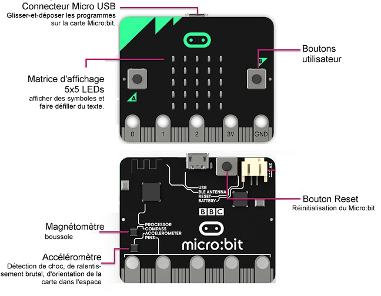

Programmation BBC micro:bit#
Mise en situation#

BBC micro:bit est un mini-ordinateur programmable de poche (une carte à microcontrôleur) conçu pour développer votre créativité avec la technologie.
Kesako ? ...

Ce petit appareil intègre beaucoup de fonctionnalités : il a 25 LED rouges qui peuvent afficher des messages, et deux boutons programmables pouvant être utilisés pour contrôler des jeux, ou, par exemple, faire une pause et sauter des chansons sur une liste de lecture ;
Le BBC micro:bit peut détecter le mouvement, la température, la luminosité, et vous dire dans quelle direction vous vous dirigez ;
Il peut aussi utiliser une connexion Bluetooth à faible énergie pour interagir avec d'autres appareils et Internet.

Ce petit ordinateur possède la dernière technologie qui équipe les appareils modernes : téléphones mobiles, réfrigérateurs, montres intelligentes, alarmes antivol, robots, etc...
Ainsi, il s'apparente à ce que l'on nomme l'Internet des objets : Internet of Things, abrégé IoT.
Grâce à la connexion à l'IoT, nous pouvons interagir avec un large éventail de capteurs à travers le monde entier en temps réel et nous pouvons maintenant prendre des décisions intelligentes en utilisant nos appareils.
Un micro:bit est à la fois autonome et extensible. En plus d'utiliser ses LED intégrées, boutons et capteurs, nous pouvons élargir sa gamme de fonctions en l'insérant dans un connecteur comme ci-contre.
Donc finalement, micro:bit est tout ce que vous pouvez imaginer. Vous pouvez le transformer en votre dispositif de messagerie, console de jeu, vêtement intelligent, alarme antivol, contrôleur de maison intelligente...
A peu près tout ce que votre imagination peut créer en utilisant des capteurs supplémentaires, en réalisant un boitier ou un support pour la carte, et en programmant son microcontroleur.
Historique ...
La BBC a initié en 2015 le projet Micro:bit, qui se veut être un nano-ordinateur à carte unique à processeur ARM destiné à l’éducation.
L’objectif de cette dernière : fournir à chaque écolier de 12 ans (« year 7 ») un support amusant et facile à utiliser.
Au début des années 80, le groupe de chaînes publiques au Royaume-Uni, la « British Broadcasting Corporation », dite BBC, lança un appel à projet pour créer un ordinateur éducatif à destination des écoliers et des écoles. Une jeune entreprise de Cambridge « Acorn » (« gland » en anglais) fut retenue pour créer cette plateforme. Le « BBC Micro » était né.

Dans la même période, ici en France, nous avons connu une initiative comparable avec le Plan Informatique pour Tous basé sur des micro-ordinateurs Thomson MO5 et TO7.
Plus récemment, quand les membres fondateurs du Raspberry Pi commencèrent à concrétiser leurs rêves d’un nano-ordinateur éducatif, ils voulurent y inscrire en guise de clin d’œil le label « BBC ». Ce droit ne leur fut pas octroyé ; néanmoins un journaliste high-tech de la célèbre « Corporation » sur son blog et sur la chaîne YouTube leur donna un coup de projecteur qui lancera le mouvement autour du Raspberry Pi.

L'idée du Raspberry Pi 400 d'inclure un ordinateur complet dans un clavier s'inspire donc des machines des années 80 telles que ce BBC micro :
L’histoire se répète donc trente ans plus tard, la BBC s’est « remis dans le bain » en lançant un objectif très ambitieux : envisager un « ordinateur de poche programmable permettant aux enfants d’explorer la créativité technologique ».

Elle voulait formuler une réponse à la fracture numérique et aux lacunes perçues des compétences informatiques des citoyens. Dans l’environnement fertile des startups technologiques du Royaume Uni et inspiré par l’énergie des « makers » et « programmeurs » autour des cartes « hackables » comme l’Arduino, le Raspberry Pi, Beaglebone et bien d’autres, la BBC a de nouveau monté une initiative d’éducation numérique dans la continuité du projet « Make It Digital » (créer le numérique). Ils ont su rapidement rassembler une trentaine de partenaires et des industriels.
Aujourd’hui, ces partenaires sont réunis dans la Fondation Micro:bit et présente la version 2...
Programmation#
Il existe différentes façon de programmer la carte BBC micro:bit, ici, nous allons utiliser celles basées sur MicroPython une version allégée de Python créée par Damien George pour la programmation de certains microcontôleurs dont celui du BBC micro:bit.
- On peut débuter avec l'éditeur en ligne https://app.edublocks.org/ pour générer un script en python à partir des blocs d'instructions. Le principe consiste à glisser/déposer des blocs d'instructions du menu de gauche dans la zone graphique pour obtenir le code Python correspondant.
-
Ensuite, pour tester un programme par simulation, on peut copier/coller le code en Python dans le simulateur de https://create.withcode.uk/ et puis on clique sur le bouton
Runou la combinaison de touchesCtrl+Entréepour l'exécuter... -
Enfin, pour valider un programme sur le matériel réel :
- on raccorde une carte BBC micro:bit avec un cable sur un port USB de l'ordinateur. Le PC doit reconnaitre la carte comme un nouveau lecteur nommé :
MICROBIT (E:); - on ouvre l'éditeur micropython officiel https://python.microbit.org/ ;
- on cliquer sur le bouton
Connect, et on sélectionne la carte"BBC micro:bit CMSIS-DAP"à associer, puis on clique sur le boutonConnexionpour établir la communication ; - Une fois connecté, on clique sur le bouton
Flashpour charger le programme qui s'exécutera dès que la LED jaune située à l'arrière de la carte aura fini de clignoter ; - Pour revoir le résultat du programme une nouvelle fois, il faut redémarrer le BBC micro:bit en appuyant sur le bouton
RESETsitué à l'arrière de la carte...
- on raccorde une carte BBC micro:bit avec un cable sur un port USB de l'ordinateur. Le PC doit reconnaitre la carte comme un nouveau lecteur nommé :
Autres solutions :
Défis à relever#
Smiley#
S'inscrire sur edublocks et faire afficher un Smiley sur la matrice des 25 Leds...
Coeur clignotant#
Modifier le programme pour qu'après la phase de démarrage du BBC micro:bit la matrice de 25 LEDs affiche alternativement les 2 images de coeur suivantes :

La fonction
sleep(t)met en pause l’exécution pendanttmillisecondes.
Exemple :sleep(1000)suspend l’exécution pendant 1 seconde.
Badge interactif#
Créer un badge interactif qui affiche un visage heureux si on appuie sur le bouton A, et un visage triste si on appuie sur le bouton B, ou un visage neutre sinon.

Feux d'artifice#
Créer une autre séquence animée simulant un feux d'artifice comme par exemple :
Pluie#
- Représenter une goutte d’eau qui tombe dans la 1ère colonne.

La fonction
display.set_pixel(x,y,i)permet d’allumer la LED de la colonnex(nombre entre 0 et 4) et de la ligney(nombre entre 0 et 4) avec une intensitéi(nombre entre 0 et 9).
Exemple :display.set_pixel(1,2,9)allume la LED située à la colonne 1 de la ligne 2 avec l’intensité 9.
-
Faire tomber dix gouttes de suite dans la 1ère colonne.
-
Faire tomber une goutte une fois dans chaque colonne.

- Faire tomber dix fois une goutte de pluie dans des colonnes choisies aléatoirement.
La fonction
randint(x,y)retourne un nombre entier aléatoire compris entre les nombres entiers x et y inclus. Pour pourvoir utiliser cette fonction, il faut ajouter from random import * au début du programme.
Exemple:randint(0,10)retourne un nombre aléatoire compris entre 0 et 10.
Pierre, feuille, ciseau#
Développer un programme pour qu'après avoir été secoué la carte BBC micro:bit affiche de façon aléatoire l'un des trois symboles suivants correspondant respectivement à une feuille, une pierre, ou des ciseaux.


Autres défis#
Essayer d'autres choses en vous inspirant par exemple de :
Prolongements#
Pour aller plus loins en programmation Python avec la carte BBC micro:bit :